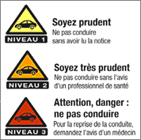

//Comment the following section for cognition.run
//See also to the end of the code
//Beginning of the section
<!DOCTYPE html>
<html>
  <head>
    <style>
    html{
      background-color: black;
      color: white;
    }
    </style>
  </head>
    <title>My Experiment</title>
    <!-- Charger jspsych -->
    <script src="jspsych-6.1.0/jspsych.js"></script>
    <script src="jspsych-6.1.0/plugins/jspsych-fullscreen.js"></script>
    <script src="stimuli_short.js"></script>
    <!-- Chager le plugin permettant de montrer du texte à l'écran -->
    <script src="jspsych-6.1.0/plugins/jspsych-survey-html-form.js"></script>
    <!-- Charger un package de styles pour améliorer le visuel de la page -->
    <link href="jspsych-6.1.0/css/jspsych.css" rel="stylesheet" type="text/css"></link>
  </head>
  <body></body>
  <!-- À partir d'ici on va déclarer les variables de la tâche -->
  <script>
//End of the section
var timeline = [];

var form_trial = {
  type: 'survey-html-form',
  preamble: "<h2>Questionnaire démographique</h2>",
  // preamble: ['<p> How are you feeling <b>right now?</b> </p>'],
  // html: '<p> Indiquez votre genre : <input name="Homme" type="radio" value="Homme" id ="Homme" label for="Homme"/>.</p>'
  html:
  // Genre
  '<p align="left">(1) Vous êtes :<input type="radio" id="homme"'+
  'name="gender" value="homme"checked label for="homme">Un homme</label>'+
  '<input type="radio" id="femme"'+
  'name="gender" value="femme"checked label for="femme">Une femme</label></p>'+
  // Date de naissance
  '<p align="left"><label for="ddn">(2) Date de naissance : </label><input type="date" id="ddn" name="ddn"'+
  'value="" min="" max=""></p>'+
  // Niveau étude
  "<p align='left'>(3) Votre niveau d'étude actuel : "+
  '<label for="academic"></label>'+
  '<select name="academic" id="academic_select>"'+
  '<option value = "">Choisissez parmi les propositions suivantes</option>'+
  '<option value = "InfBac"> Je me suis arrêté.e avant le bac</option>'+
  '<option value = "BAC">BAC</option>'+
  '<option value = "L1">L1</option>'+
  '<option value = "L2">L2</option>'+
  '<option value = "L3">L3</option>'+
  '<option value = "M1">M1</option>'+
  '<option value = "M2">M2</option>'+
  '<option value = "Doctorat">Doctorat</option></select></p>'+
  // Type études
  "<p align='left'>(4) Votre domaine d'études : "+
  '<label for="department"></label>'+
  '<select name="department" id="deparment>"'+
  '<option value = "">Choisissez parmi les propositions suivantes</option>'+
  '<option value = "ALL"> Arts, Lettres et Langues</option>'+
  '<option value = "DEG">Droit, Économie, Gestion</option>'+
  '<option value = "STS">Science et Technologie</option>'+
  '<option value = "STAPS">STAPS</option>'+
  '<option value = "Autre">Autre</option></select></p>'+
  // Antécédents
  '<p align="left">(5) Présentez-vous des antécédents psychiatriques ou neurologiques ?'+
  '<i>(ex. : dépression, trouble bipolaire, traumatisme cranien, AVC, etc.)</i>'+
  '<input type="radio" id="oui"'+
  'name="atcd" value="oui"checked label for="oui">oui</label>'+
  '<input type="radio" id="non"'+
  'name="atcd" value="non"checked label for="non">non</label></p>'+
  // Si oui
  '<p align="left">(6) Suivez-vous un traitement médicamenteux qui pourrait avoir'+
  'un impact sur votre état de vigilance <i>(anti-dépresseur, anxiolytique, etc.)</i> ? '+
  '<p></p>'+
  '<p align="left"><input type="radio" id="non"'+
  'name="medoc" value="non"checked label for="non">Non</label></p>'+
  '<p align="left"><input type="radio" id="oui_nv1"'+
  'name="medoc" value="oui_nv1"checked label for="oui_nv1">Oui, niveau 1</label></p>'+
  '<p align="left"><input type="radio" id="oui_nv2"'+
  'name="medoc" value="oui_nv2"checked label for="oui_nv1">Oui, niveau 2</label></p>'+
  '<p align="left"><input type="radio" id="oui_nv3"'+
  'name="medoc" value="oui_nv3"checked label for="oui_nv1">Oui, niveau 3</label></p>'
  };

timeline.push(form_trial);

jsPsych.init({
  timeline: timeline
});
//Beginning of the section
</script>
<html>
//End of the section
